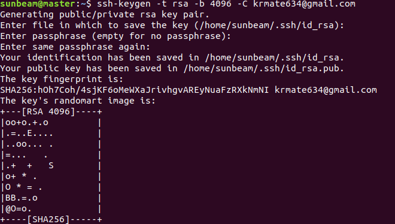
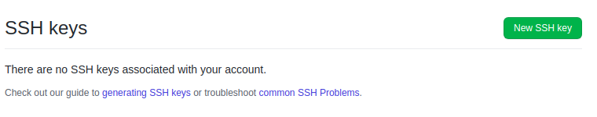

You must have always seen two options while cloning remote repository one is HTTPS and other SSH. In this post I'm discussing the second topic. and HTTPS is what we all use frequently. and while pushing the changes on the remote repository you must be getting annoyed since it asks for username and password every time, if so it’s the perfect time to switch to use SSH url.
So what is SSH?
An SSH key is an alternate way to identify yourself that doesn't require you to enter your username and password every time. SSH keys come in pairs, a public key that gets shared with services like GitHub, Gitlab and a private key that is stored only on your computer. First all check whether SSH is already present or not. ls -al ~/.ssh If it gives list of files like this
It means the key is already generated. if not let's see the steps to generate the key.
on terminal enter:
ssh-keygen -t rsa -b 4096 -C "email_registered_github"
Generating public/private rsa key pair.
For all this statements in the image just press enter. at the end you will get the key generated.
Now the keys are generated, you can check it I have mentioned above how to check it.
Now go login to github account in browser and go on profile and settings in that. It will open the list of menu, go to SSH and GPG key in that go to SSH key you will see something like in the image click on new SSH key it will open window where we need to paste the key contents which are in the file id_rsa.pub
Before that go to terminal and go to home directory and enter below commands on terminal.
cd .ssh
ls -la
vim id_rsa.pub copy then contents and paste it in the browser window by clicking on add new key.
And add the key. It’s done now to carry on your git operations but using SSH url has definitely reduced your headache of entering username and password each time.